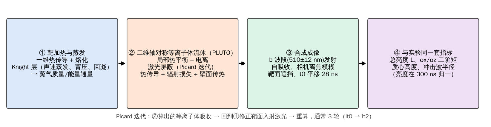
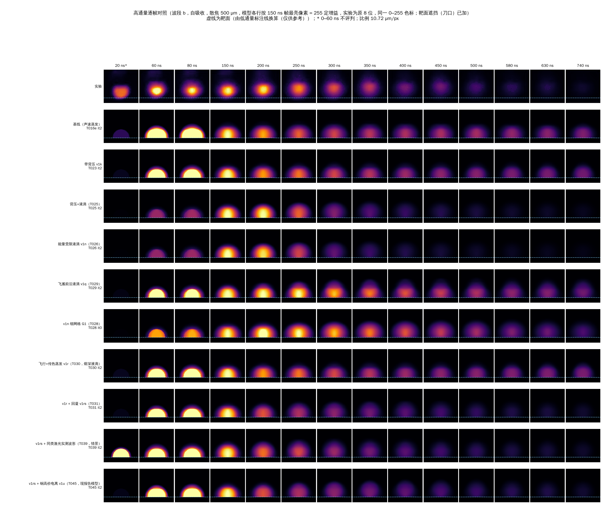
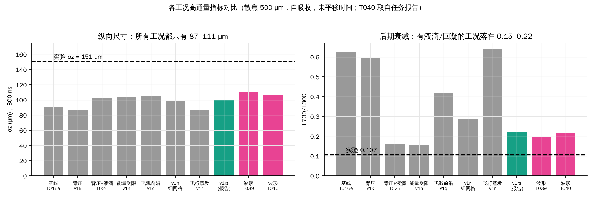
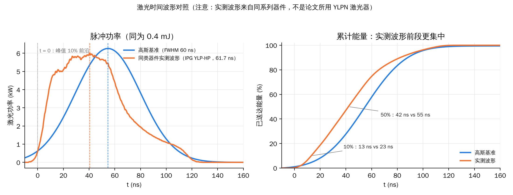
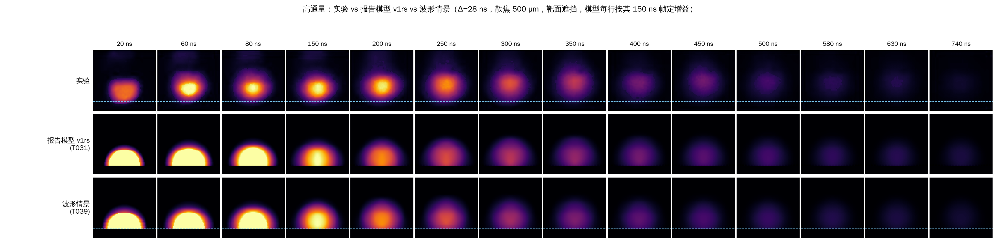
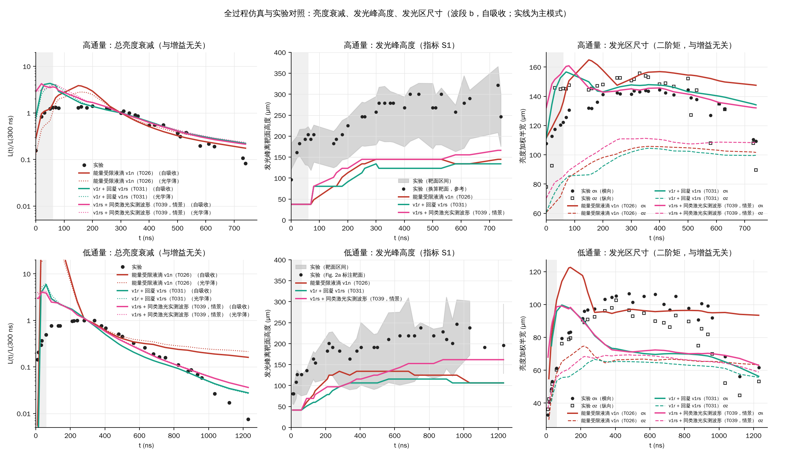
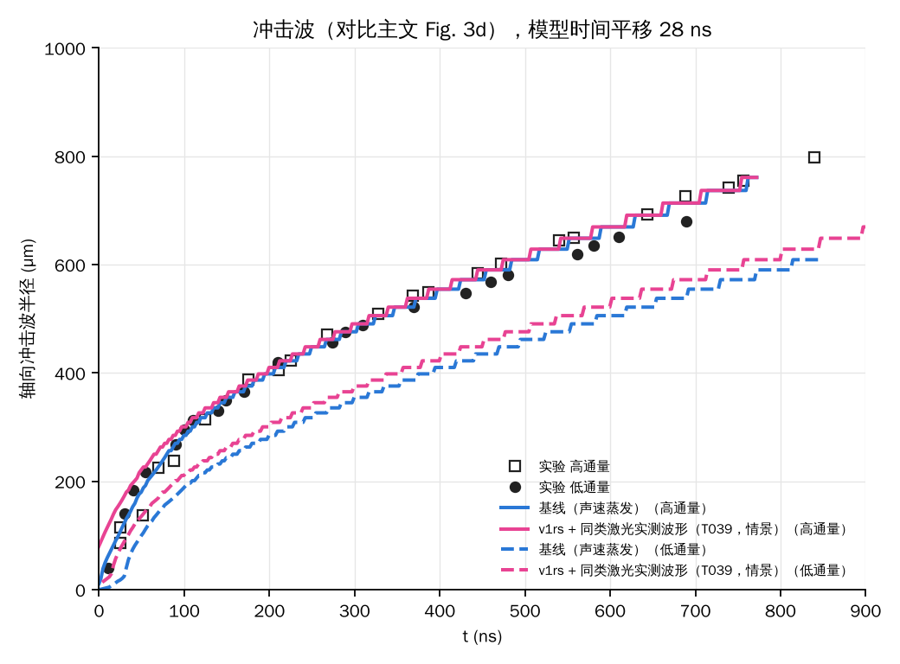
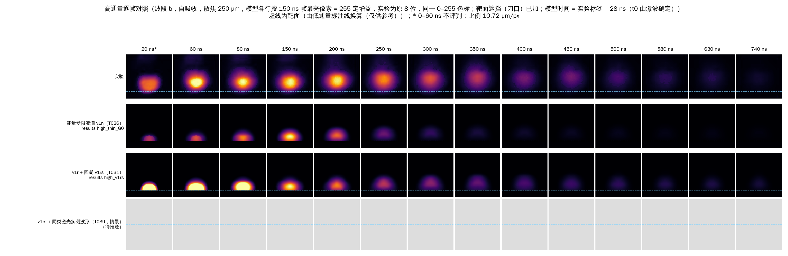
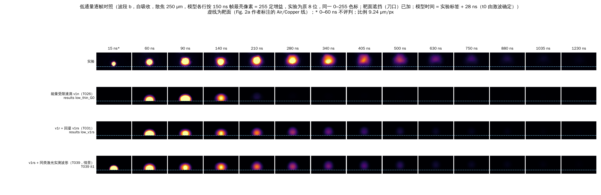

日期：2026-11-26 ｜ 目标文献：Chen et al., Laser Photonics Rev. 2025, 19, 2400388，补充材料 Fig. S4（高通量）与 S3（低通量）
更新（11-27 凌晨）： 本报告的图是在修正"连续谱只计了 1–3 价离子"这一成像缺陷之前生成的。工作站已用修正后的程序把 5 个高通量算例全部重新成像（T044）：150 ns 以后的所有指标（σx、σz、发光中心高度、亮度衰减比）变化都小于 0.3%，修正只影响脉冲期间（30–60 ns 发光中心抬高 5–13 µm，总发光多约 20%）。所以本报告的图和数字仍然有效，"羽流纵向偏矮"不是成像缺陷造成的。
目标。 论文补充材料的 Fig. S4 给出高通量（0.4 mJ）下铜等离子体羽流的一系列时间分辨图像，Fig. S3 是低通量（0.32 mJ）。我们不是去拟合它们，而是从激光-靶-等离子体的物理出发，算出同样的图像，再与实验对比。导师的规则：不为贴合结果而调参数；每个新机制先写入预注册文件（docs/PREREG_v0.md），再看第一个结果。 目前焦点是高通量的亮度趋势和羽流尺寸；低通量只作参考。
图像怎么拍的。 带通滤波 b 波段（510 ± 12 nm），铜原子/离子谱线加连续谱，用相机拍摄各延时下的羽流。
实验指标（模型用完全一样的算法算）：
| 指标 | 含义 |
|---|---|
| L | 图像总亮度（像素值之和），看亮度随时间怎么衰减 |
| σx、σz | 亮度加权的二阶矩宽度（横向、纵向），衡量发光区尺寸，与相机增益无关 |
| 质心高度 zc、发光峰高度 | 发光中心离靶面多高 |
| 冲击波半径 | 来自主文 Fig. 3d 的泵浦–探测测量，独立于羽流图像 |
高通量实验基准值（300 ns）： σx = 141 µm，σz = 151 µm，纵横比 σz/σx = 1.07；L500/L300 = 0.37，L730/L300 = 0.107。
一个重要限制： 高通量实验图像在 50–160 ns 之间饱和（亮度到顶），这段时间的总亮度不可信。所以亮度趋势统一用 300 ns 归一（L(t)/L(300 ns)），不用 150 ns。

两个对齐约定（都有依据，不是拟合图像得来）：
怎么读逐帧图。 每行模型按自身 150 ns 那一帧的最亮像素定增益，所以同一行内可以比较亮度随时间的变化，不同行之间主要比较形状和位置。实验帧是原始 8 位图，早期帧在高亮处接近饱和。
每个工况都是在上一个基础上增加一项物理。下图是所有工况的逐帧图（高通量，散焦按标定取 500 µm，未做时间平移；最后一行为现报告模型 v1rs+v1u）。各算例在 T044 中已确认成像修正对 150 ns 以后无影响。时间对齐（Δ = 28 ns）的版本见第四节。

小结表（高通量，300 ns；实验 σx 141、σz 151、纵横比 1.07、L730/L300 = 0.107）：
| 行 | 工况 | σx | σz | L730/L300 |
|---|---|---|---|---|
| 2 | 基线 T016e | 156 | 91 | 0.63 |
| 3 | 背压 v1k（T023） | 149 | 87 | 0.60 |
| 4 | 背压+液滴 T025 | 149 | 102 | 0.16 |
| 5 | 能量受限液滴 v1n（T026） | 149 | 103 | 0.16 |
| 6 | 飞溅前沿液滴 v1q（T029） | 145 | 105 | 0.42 |
| 7 | v1n 细网格 G1（T028） | 159 | 98 | 0.29 |
| 8 | 飞行+传热蒸发 v1r（T030） | 149 | 87 | 0.64 |
| 9 | v1rs（T031，报告模型） | 147 | 100 | 0.22 |
| 10 | v1rs + 实测波形（T039，情景） | 145 | 111 | 0.19 |
（上表为散焦 500 µm、自吸收、未平移时间，由各算例的指标文件读出，单位 µm；T040 见 5.4。）

读图要点： 所有工况的 σz 都只有 87–111 µm，远低于实验的 151 µm，说明纵向偏短不取决于我们尝试过的这些蒸发/液滴方案。后期衰减则被"液滴+回凝"拉到接近实验。
发光核心悬在靶面上方，随时间变圆、变暗，到 740 ns 几乎熄灭。

上图：高斯 60 ns 基准（蓝）与同类器件实测波形（橙），同为 0.4 mJ。实测波形前沿更陡，50% 能量在 42 ns 送达，高斯为 55 ns。
"最好"这里不是靠对比挑出来的：报告模型是 v1rs（因其每项都有物理依据而事先定为报告模型），波形是情景。下图把它们与实验并排放（高通量，Δ = 28 ns，散焦 500 µm，靶面遮挡，其它约定同前）：

从图上看到的： - 约 200 ns 以后，两个模型的发光区大小、衰减节奏与实验大体相近。 - 早期（20–80 ns）模型的发光是紧贴靶面的亮"圆顶"，而实验的亮核明显悬在靶面上方。模型图在这几帧过曝（增益按 150 ns 帧设定），不要拿这几帧的亮度做定量比较。 - 实验发光区在纵向更长。
完整的曲线对比（亮度、发光峰高度、σx/σz，下图中粗红线为 v1n、绿为 v1rs、粉为波形情景）：

从上排（高通量）图上看到的： - 亮度衰减： 300 ns 之后三条模型曲线几乎重合，并与实验点衔接。到 700 ns 时模型仍明显高于实验（0.22 对 0.107）。0–150 ns 实验饱和，不评判。 - 发光峰高度： 模型约 80–150 µm，实验约 200–300 µm，明显低。 - 尺寸： σx 模型 145–149 µm 与实验点吻合；σz 模型虚线约 100–111 µm，实验空心点约 140–155 µm，偏低。
冲击波（独立数据）：

上图：高通量（方框是实验）模型平移 28 ns 后，20–900 ns 与 Fig. 3d 吻合；低通量（圆点是实验）模型曲线明显偏小。
横向尺寸与"偏小"： 把散焦从 250 µm 改为 500 µm 后，早期帧的 σx 与实验相符。历史图（250 µm）见附录。
实验最早的高通量帧（0/20/30 ns）σx 只有 108/113/117 µm，此时源本身很小，宽度主要由点扩散函数决定，据此反推离焦 ≈ 475–500 µm，与事先声明的"高"情景（500 µm）一致。用它之后，300 ns 时 σx 模型 145–149 µm，实验 141–145 µm。此前的图用 250 µm，是"看起来偏小"的主要原因。低通量 10 ns 帧与 0 µm 一致。
实验最早帧中，靶面以下只有 3–9% 的光，而"硬切"约定得 0%，"不切"得 35–40%，所以保留硬切约定。
在 v1rs 上，对已登记参数逐个改动（共 8 组，高通量）：σx 变化 ≤ 7%，纵横比变化 ≤ 11%，σz 仍在 93–100 µm。
| 项目 | 做了什么 | 结果 | 结论 |
|---|---|---|---|
| T041 激光沉积诊断 | 看激光在哪里被吸收 | 所有算例 ≥99% 激光能量在靶面 3.5–6 µm 内被吸收 | 模型里没有沿光束向上爬升的吸收前沿 |
| T042 双温雪崩（非平衡电离） | v1rs 与波形上开启 | 沉积仍 <6 µm，σz 98–109 µm | 未达预注册的 20 µm 判据，不采用 |
| T042 脉宽按 FWHM 35 ns | 脉宽读法改变 | 耦合能量 +45%（277 vs ~190 µJ），但 σz 仅 97 µm，激波拟合更差（log-RMSE 0.149 vs 0.085） | 不支持 |
| T040 波形自洽链 | 波形情景自己跑 Picard | 纵横比 0.72（σx 147、σz 106），L730/L300 = 0.215 | 播种的 T039（0.77）高估了波形的作用；波形仍只是情景 |
| T043 发光高度诊断 | 看羽流各区温度 | 脉冲期间和刚结束时，抬升的羽流为 50–135 kK；早期 b 波段发射主要来自靠壁的稠密层 | 解释了为什么模型的发光贴近靶面 |
src/lipsim/image/forward.py、src/lipsim/optics/props.py）。模拟用的数据表逐字节不变，所以不用重跑仿真，只重新成像了 5 个高通量算例。150 ns 以后所有指标的变化都小于 0.3%。 原因是那时羽流已降到 6 万 K 以下，4、5 价离子很少。修正只影响 30–80 ns：发光中心抬高 5–13 µm，b 波段总发光多约 20%。结论：这个缺陷不是"羽流偏矮"的原因。| 指标（300 ns） | 实验 | v1rs（原） | v1rs + v1u（新报告模型） | 波形情景（原 → v1u） |
|---|---|---|---|---|
| σx / σz (µm) | 141 / 151 | 148 / 102 | 140 / 104 | 145/111 → 142/110 |
| 纵横比 | 1.07 | 0.69 | 0.74 | 0.76 → 0.77 |
| L500/L300 | 0.37 | 0.41 | 0.48 | 0.41 → 0.38 |
| L730/L300 | 0.107 | 0.225 | 0.231 | 0.216 → 0.203 |
| 激波拟合误差 | — | 0.086 | 0.087 | 不变 |
图：第一行为实验，第二行为最新报告模型 v1rs+v1u（T045），第三行为原报告模型 v1rs（T031，修正后成像）作参照。两种模型在 200 ns 以后羽流略圆、发光中心略高，差别不大；早期模型发光贴在靶面上（亮度饱和），实验的发光核心悬在靶面上方。
| 问题 | 现状 | 下一步 |
|---|---|---|
| 高通量 σz 偏短约 30%（100–111 vs 151 µm），纵横比 0.68 vs 1.07 | 参数、雪崩、脉宽、波形、成像修正（T044）都不能解决 | v1u 已完成（纵横比 0.69→0.74），主体差距仍在；下一步检查模型结构性限制（二维轴对称局部热平衡流体、早期近壁蒸气层描述） |
| 发光中心贴近靶面（实验 0–30 ns 抬升到约 200 µm） | T043：早期发光由靠壁稠密层主导；成像修正后抬高 5–13 µm | v1u 后看热羽流的温度和发光 |
| 后期衰减偏慢（L730/L300 0.22 vs 0.107） | 在 2 倍以内 | 随 v1u 重算观察 |
| 低通量耦合能量不足约 3 倍，点燃偏晚 | 已试吸收率、参数、雪崩、波形，均无效 | 仅作参考，暂不投入 |
| 论文激光器（YLPN）的实测波形 | 器件已不存在，只有同类器件的波形 | 可再查文献；波形保持为情景 |
要点： T044 已确认成像修正不改变 150 ns 以后的结果，第三、四节的结论成立。v1u 的结果见 5.7。
| 文件 | 内容 |
|---|---|
| flow.png | 仿真链示意（新） |
| focus_exp_v1rs_wave.png | 实验 vs v1rs vs 波形情景，Δ=28 ns，500 µm，遮挡（新，本报告生成） |
| bars_sigmaz_decay.png | 各工况 σz 与 L730/L300（新；T040 取自任务报告） |
| full_frames_high_occluded_g150_t28_d500.png | 高通量逐帧图，Δ=28 ns，500 µm（v1n、v1rs、波形、v1rs+v1u 四行模型） |
| full_frames_high_occluded_g150_d500.png | 全部工况逐帧图，500 µm，未平移（含 v1rs+v1u） |
| full_frames_high_occluded_g150_t28.png | 同上，250 µm（历史） |
| full_frames_high_occluded_g150.png | 全部工况逐帧图，250 µm，未平移（历史） |
| full_frames_low_occluded_g150_t28.png | 低通量（仅参考） |
| full_curves_t28_dhigh.png | 亮度/高度/尺寸曲线，高通量 500 µm |
| full_shock_t28.png | 冲击波与 Fig. 3d |
| laser_waveform_compare.png | 高斯与实测波形 |
历史图（散焦 250 µm，Δ = 28 ns，高通量）：

低通量（仅参考）：

图中低通量模型明显偏暗偏小，且 210 ns 之后 v1n 基本熄灭，与实验差距很大。
metrics_b_sa_high.csv 在 300 ns/730 ns 处读出（散焦 500 µm）。tasks/T034.report.md、tasks/T042.report.md、tasks/T043.report.md。results/figures/cases_explained.md、results/figures/overnight_1126_summary.md、docs/DECISIONS.md。results/report_1127/make_figs.py、make_flow.py。